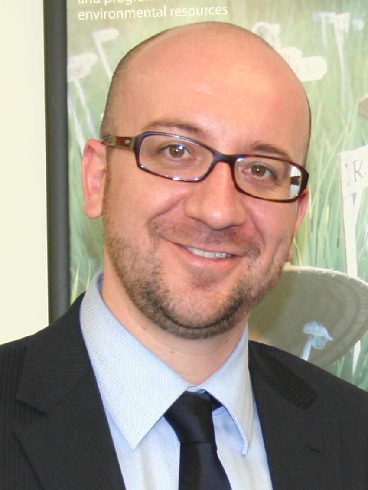

Belgium

Dr. Christopher N. Lawrence
Middle Georgia State University
POLS 2301: Comparative Politics
🔊 Disable Narration
Geography
The Kingdom of Belgium (Koninkrijk België [Dutch]; Royaume de Belgique [French]; Königreich Belgien [German]) is a country in western Europe, with a population of approximately 11 million. It is a little bit bigger than the U.S. state of Maryland.
Ancient History
Area currently known as Belgium was inhabited by Germanic tribes known as the Belgae during the era of Roman expansion.
Annexed by Rome and governed as part of Gaul, eventually split off as Gallia Belgica.
After decline of the Roman empire, became part of the Frankish kingdom.
Early Middle Ages

Upon split of the Frankish kingdom in 843, area divided between West Francia (Charles the Bald) and Middle Francia (Lothair I).
Northern part of Middle Francia became Lotharingia, eventually divided itself.
Fiefdoms in the region were ultimately divided between the nominal control of France and the Holy Roman Empire.
The Burgundian Netherlands

Eventually most of the territories in the region, including the County of Flanders which historically had been under the suzerainty of the king of France, fell under the control of the duchy of Burgundy, ruled by the House of Valois, through intermarriage.
They were subsequently inherited by the House of Habsburg, who also ruled Spain until 1700.
The Spanish Netherlands

In 1581, the northern, mostly Protestant provinces of the Burgundian Netherlands revolted against Habsburg rule, forming the Dutch Republic.
The southern provinces, which had remained Catholic, mostly remained under the control of the Habsburgs and became known as the “Spanish Netherlands.” This was the first territory to emerge whose borders correspond mostly with those of modern Belgium.
After 1715, control passed to the Austrian branch of the Habsburg family and the area became known as the “Austrian Netherlands.”
Annexation by Revolutionary France
In 1794, the armies of revolutionary France invaded the Austrian Netherlands, along with the Dutch Republic and the Prince-Bishopric of Liège.
The Austrian Netherlands and Liège were annexed by France, while the decentralized Dutch Republic was replaced by the unitary Batavian Republic allied with France.
The annexation was largely unpopular among the population, who had not been subject to the revolutionary fervor that had taken place in France over the past five years.
The United Kingdom of the Netherlands
At the conclusion of the Napoleonic Wars in 1815 (after Napoleon's defeat at the Battle of Waterloo, near Brussels), the Low Countries were reunited, with most of the territory becoming part of the United Kingdom of the Netherlands and the remainder forming the Grand Duchy of Luxembourg.
Both the Netherlands and Luxembourg shared the same ruler, King William I (a personal union); the main difference was that Luxembourg was part of the German Confederation while the Netherlands was a fully independent state.
The provinces of the new kingdom were generally based on the départements that had been established under French rule.
The Formation of Belgium
In 1830, the southern, Catholic provinces seceded from the rest of the Netherlands after a brief uprising.
France favored splitting Belgium on linguistic lines. Britain feared French control of Antwerp and other ports.
Ultimately, the major European powers decided to allow Belgium to be formed as a unified “buffer state” between France, the Netherlands, and Prussia (later Germany).
The portion of Luxembourg where the population mostly spoke Walloon and other Romance languages was also ceded to Belgium.
The Belgian Monarchy

In 1831, Leopold I—a German prince who was the uncle of the future Queen Victoria, then the heir to the British throne, and the widower of her cousin Charlotte—was installed by the revolutionary assembly as the first King of the Belgians.
Belgium was a constitutional monarchy who shared power with a parliament, although both Leopold I and his son Leopold II (king 1865–1909) took a more active role in domestic politics than the British monarchs of the period did.
Wallonia and Flanders
Over time, the term Flanders (demonym Fleming; adjective: Flemish) became associated not just with the provinces of East and West Flanders, but with the broader region in the north of the country where various Dutch dialects were spoken by the bulk of the population. (Dutch is a Germanic language, as is English.)
Wallonia (demonym and adjective: Walloon) similarly was applied beyond the area where Walloon was spoken. The term became associated with the south of the country, where the population generally spoke one of the Romance langues d'oïl such as Picard and Walloon (both closely related to, but distinct from, French), along with areas in the southeast where Luxembourgish (another Germanic language) was spoken.
Belgium in the 19th Century
During the reign of Leopold II, universal male suffrage was introduced in 1893; Belgium was also the first country to adopt proportional representation in national elections.
Belgium became a highly developed, industrialized country during the 19th century.
Major dispute in Belgium was between liberals and Catholics over the role of religion in elementary schools: the “School War”:
- 1879: Liberals gain power; establish new, secular primary schools across Belgium.
- Boycott led by Catholic Church; Catholic elementary schools flourish despite no government funding.
- 1884: Catholic parties regain power; public funding of Catholic schools put in place.
The Congo
However, Leopold II also aspired to control colonies in Africa or Asia. After failing to acquire the Philippines from Spain, he sponsored expeditions in Africa by British explorer Henry Morton Stanley that culminated in the establishment of the Congo Free State in 1885.
Leopold treated the Congo as his own personal fiefdom. Officials and companies in the colony behaved with impunity. The native peoples were subjected to forced labor in mines and on rubber plantations, resulting in millions of deaths.
In the first decade of the 1900s, books written by Joseph Conrad and Arthur Conan Doyle publicized the atrocities taking place in the Congo, leading to international pressure for the Belgian government to step in. In 1908, Belgium took over control of the Congo Free State from Leopold II.
Language in 19th Century Belgium
The language of the political elite, the government and courts, secondary and higher education, and business was almost exclusively French, even in areas where Germanic languages were dominant in the population.
The dominance of French in state affairs led to complaints from the Dutch-speaking majority that they were second-class citizens in their own country. Legal reforms that put Dutch and French on an equal footing in government in the late 1800s had little effect in practice until well into the 20th century.
The language barrier may have also hindered the economic development of Flanders; except for the Brussels region, Flanders was substantially poorer than Wallonia until after World War II.
World War I

Early in World War I, Germany invaded neutral Belgium and Luxembourg to try to avoid the bulk of France's defenses, which were concentrated on their mutual border.
The invasion is the event that triggered British entry into the war; the UK had guaranteed to protect Belgium as a neutral buffer state in the treaty acknowledging Belgian independence in 1839. Germany did not expect Britain to honor this commitment.
Most of Belgium was occupied by Germany throughout the war until Germany's surrender in 1918. After the war, Belgium annexed some small territories that had been part of Germany in the east.
World War II
Like in World War I, Belgium was officially neutral. Again German plans were based on sweeping through Luxembourg and Belgium to attack France indirectly, avoiding the Maginot Line of defenses along the Franco-German border.
In May 1940, the German Blitzkrieg quickly conquered Belgium. Against the advice of his government, King Leopold III, who had personally taken command of the army, surrendered to the Germans.
The government fled to Paris (and ultimately to London) and condemned Leopold as “unfit to reign.” The king was imprisoned by the Germans and attempted to negotiate with Hitler to no avail.
Leopold III in World War II

Leopold's actions in the war had been popular early on, but his failure to win concessions from the Germans, along with his decision not to criticize the German occupation, his criticism of the government-in-exile, and his remarriage in 1941 led to a decline in his domestic support.
After D-Day in June 1944, the Germans took Leopold to Germany as their prisoner. The government, which returned from exile, chose the king's brother Prince Charles to serve as regent.
Leopold was freed from German captivity by American forces in May 1945, but did not return to Belgium as his actions had deeply divided the country.
The Royal Question

To resolve the status of Leopold as king, in March 1950 the government organized a referendum on whether he “should resume the exercise of his constitutional powers.”
Although 57.7% of the population voted in favor of the king's return to power, the country was deeply divided. In Brussels, just 48% of the population was in favor, while in Wallonia only 42% of voters favored the king resuming his duties.
Leopold III returned to the country and resumed his position in July, which prompted a series of general strikes concentrated in Brussels, the port of Antwerp, and industrial areas of Wallonia. The country was paralyzed.
The prospect of Wallonia seceding led Leopold to announce he would abdicate in favor of his son, Prince Baudouin, on August 1. King Baudouin took the throne on July 17, 1951.
International Cooperation

After World War II, Belgium rejected neutrality and instead became a key proponent of European cooperation and integration.
- 1948: Benelux Customs Union (now just the Benelux Union).
- 1949: North Atlantic Treaty Organization.
- 1951–52: European Coal and Steel Community (ECSC).
- 1957–58: European Economic Community (EEC) and European Atomic Energy Community (Euratom).
- 1993: Agreements on Common Foreign and Security Policy and police/judicial cooperation.
- 1995: Schengen Agreement enters into force.
- 1999: Euro established; physical currency circulates from 2002.
- 2009: Lisbon Treaty renames EC as the European Union, subsumes additional policy areas.
Language Politics
Beginning with the formation of the state, the capital Brussels and its suburbs in southern Flanders, historically a Dutch-speaking region, gradually became “Francized” as French was the “prestige language” in government and business.
Similarly, in Wallonia, the use of French effectively replaced the use of Picard, Walloon, and other languages outside the home; this was a less politically controversial change, given that both languages are substantially similar to French.
From 1932, a language census was established to decide official language of each municipality (based on local majority: French, Dutch, or German) and where language facilities would be provided (where 30% of people speak French or Dutch). Municipalities without language facilities would be monolingual, except the Brussels-Capital Region that is bilingual.
Stemming the Tide
Continued “Francization” of Brussels suburbs led to Flemish boycott of 1960 language census and, in 1962, freezing the language areas that were set based on the 1947 census.
To reduce Francization, Dutch speakers were not allowed to send their children to Francophone schools (and vice versa) in bilingual areas from 1962 to 1971.
Improvement in the prestige of Dutch, along with changes in the Belgian economy in favor of Flanders, has somewhat reduced Francization. However, immigrants tend to favor French over Dutch and Brussels has become almost exclusively francophone.
State Reform in Belgium
Conflict over linguistic issues reached a peak in 1968 when protests brought down the Belgian government after a dispute over instruction in French at the Catholic University of Leuven, which was located in a largely Dutch-speaking community north of Brussels.
The new government began a process of “state reform”: a series of measures, generally involving changes to the national constitution, that has transformed Belgium since 1970 from a centralized, unitary state into a highly decentralized state with relatively few shared national institutions.
There have been six rounds of state reform to date; the most recent reform took place in 2011.
National Institutions
The major institutions of the national government of Belgium are:
- The Monarch (head of state).
- The Government (executive and head of government).
- The Parliament (legislature).
- The Judiciary.
The Monarchy
The current king is King Philippe, who took the throne in July 2013 upon the abdication of his father, King Albert II.
By convention, the king is expected to be “above politics” in public; his major political responsibilities either are delegated to others or can only be exercised with the countersignature of a government minister.
The Politics of the Monarchy
Since the succession of King Baudouin in 1951, the only major controversy involving the king's powers involved Baudouin's refusal to sign into law legalizing abortion in 1990; at Baudouin's request, he was declared (temporarily) unable to reign for a day and the members of the government gave Royal Assent to the bill in his stead.
Monarchs also have the power to preside over meetings of the Council of Ministers (the cabinet), but none have exercised this power since the 1950s.
Belgian kings may also have substantial influence over the formation of governments by their choices of informateurs and formateurs.
The Federal Government
In practice, the government is led by a prime minister along with a cabinet of 14 other ministers and other supporting ministers outside the cabinet.
Since October 2014, the prime minister has been Charles Michel of the Francophone liberal Mouvement Réformateur (MR) party. Other coalition parties:
- The conservative-Flemish nationalist Nieuw-Vlaamse Alliantie (N-VA; New Flemish Alliance).
- The Flemish Christian Democrats (Christen-Democratisch en Vlaams, CD&V; Christian Democratic and Flemish).
- The Flemish liberal Open Vlaamse Liberalen en Democraten (Open Vld; Open Flemish Liberals and Democrats).
Government Formation in Belgium
The complexity of forming coalition governments in Belgium led to a multi-stage process.
Typically the monarch appoints an elder statesman as an informateur who meets with leaders of the various parties to identify possible coalitions and then reports back to the monarch. The king then decides whether to allow someone to attempt to form a government, or whether further discussions are required (which may result in the king appointing a new informateur).
Once the king is satisfied someone (typically a party leader) is capable of forming a government supported by a majority of MPs, he or she is appointed as a formateur—a presumptive prime minister—and begins formal negotiations with other parties on forming a cabinet and establishing a legislative program.
More on Government Formation
When an agreement is reached, the formateur is officially appointed by the king as the prime minister, heading a cabinet of 15 ministers.
As it can take a long time for a government to be formed, the previous government remains in office as a caretaker government until the new government is ready to take office. By convention caretaker governments can only act to continue the day-to-day operations of the country or (in an emergency) after consultation with all of the major parties.
The Federal Parliament

The Belgian Federal Parliament comprises two chambers:
- The Chamber of Representatives.
- The Senate.
Both chambers meet in separate wings of the Palace of the Nation in Brussels.
The Chamber of Representatives
The Chamber of Representatives includes 150 members, elected by proportional representation.
Since the Sixth State Reform in 2011, which took effect at the 2014 federal elections, each province, along with the Brussels-Capital Region, is a constituency for the Chamber of Representatives. The number of seats allocated to each constituency is based on its share of the overall population.
To win seats in a constituency, a party (or joint list of parties) must receive at least 5% of the constituency-wide vote for its list or candidates.
Dual Mandates and Cabinet Responsibility
As in France, sitting MPs may not serve as government ministers; although almost all of the government ministers will have been elected on their party list, they must resign from Parliament and the first candidate on their party list from their constituency who did not gain a seat replaces them. This is also true for Belgium's subnational parliaments.
Also, MPs may only serve in one of the directly-elected parliaments; in the event of a conflict, the same procedure applies. (Parties often list party leaders and other popular candidates on ballots for multiple parliaments to build support for their list.)
The cabinet is solely responsible to the Chamber of Representatives and must retain its confidence.
Consociationalism
The chamber is divided into two language groups based on the theory of consociationalism developed by Dutch political scientist Arend Lijphart.
Members elected from the provinces in the Flemish Region are part of the Dutch language group, while members from Wallonia are part of the French language group. Those elected from Brussels are assigned to the language group corresponding to the language they take the oath of office in.
Laws that affect the powers of the regions and communities, as well as laws that would alter the “language border,” must be approved by a majority of both language groups.
In practice this means that coalitions need to command not just a majority of the 150-member chamber but also a majority of members from each language group if they want to engage in state reform.
Consociationalism Elsewhere
A similar consociational system is used in the Northern Ireland Assembly; however, they can choose their group affiliation, more matters are potentially subject to cross-group agreement, and the groups are based on religious communities (Protestant, Catholic, or nonsectarian) rather than language.
Similar systems have been proposed or implemented in other societies with deep cultural, ethnic, or religious divisions, including Bosnia and Cyprus, with mixed success.
Open List Proportional Representation
Belgium uses an open list proportional representation system where voters can either cast a vote for a party or an individual candidate. In a list system, each party (or alliance of parties) submits a list of candidates to be elected for each constituency, in order of preference. For example, if the party earns two seats from West Flanders based on its share of the vote, the top two candidates on its list will be elected.
In Belgium, candidates on the list who receive more than half of the total votes necessary for their party to gain a seat (the “quota”) are “bumped up” to the top of the list, in order of the number of votes they get, potentially meaning that candidates ranked higher than them by the party may not actually be elected.
Voting in Belgium is legally mandatory, although the most recent prosecution for not voting took place in 2003.
The Senate
The Senate is the upper house of the Belgian Federal Parliament. Originally, as was the case of most upper houses, it had equal power with the Chamber of Representatives. Over the past few decades, its powers have been reduced considerably, although both chambers must still consent to constitutional amendments, treaties, and state reform laws.
Since the Sixth State Reform in 2011, the Senate has no longer been directly elected. Instead, 50 senators are appointed from the membership of the community and regional parliaments (from within their own membership), with seats allocated to parties based on the results of the federal Chamber of Representatives election. These senators remain members of their community and/or regional parliament(s).
After they are chosen, 10 “co-opted” senators are selected (6 by the Dutch-language group and 4 by the French-language group).
The Legal System and Judiciary
Belgium has a civil law legal system, modeled after that of France. Unlike the rest of the political system, the courts have not gone through the state reform process and thus the judiciary remains an exclusively federal responsibility.
The highest court for most matters is the Court of Cassation.
However, in 1980 a Constitutional Court was established to arbitrate disputes over the powers assigned by the Constitution to the national and subnational governments; it also has the power to protect individual rights and freedoms by declaring laws and actions to be unconstitutional.
Belgian Federalism Today
The process of state reform in Belgium has resulted in a complex structure of entities at the subnational level:
- Communities, based on language and culture.
- Regions, based on territory.
- Provinces, political subdivisions of the regions of Flanders and Wallonia.
- Municipalities, political subdivisions of the provinces and Brussels-Capital Region.
Communities
In 1970, the First State Reform established three cultural communities based on language. They gained additional powers in the Second State Reform of 1980 and became known as communities:
The Flemish Community (originally known as the Dutch Cultural Community).
The French Community, which also uses the controversial name Wallonia-Brussels Federation.
The German-speaking Community.
Community Governments
Each community has a unicameral parliament, along with a government responsible to it headed by a Minister-President.
The Flemish Community and German Community parliaments are directly elected via open list proportional representation.
The French Community's parliament consists of:
75 members representing Wallonia, who are the Francophone members of the Walloon Parliament, along with French-speaking replacements for any German-speaking Walloon MPs.
19 members of the Parliament of the Brussels-Capital Region, chosen by the French-speaking members of that parliament.
Community Powers and Structure
The communities have powers over education, culture and the media, health policy, and social assistance programs (except cash benefits).
The communities exercise these powers only in geographic areas they control: the Flemish (Dutch-speaking) Community only has power in Flanders and Brussels, the French Community operates in most of Wallonia and Brussels, and the German-speaking Community operates in the portion of Wallonia annexed from Germany by Belgium in 1920.
The French and Flemish communities are both headquartered in Brussels; the German-speaking community's capital is Eupen in the northeastern province of Liège.
Language Facilities
27 municipalities that have a sizable population speaking a minority language (Dutch, French, or German, depending on the municipality) have language facilities; in these areas, the community must finance nursery schools and elementary schools in that language as well.
Public officials in 24 of these municipalities are also required to communicate with citizens in one of the minority languages if requested.
All of the municipalities in the German-speaking Community have French language facilities; 12 municipalities in the Flemish Community surrounding Brussels also have French language facilities.
Except in the Brussels region, government institutions are otherwise monolingual, including road signs and announcements on trains and buses. Since most places have different names in Dutch, French, and German, this can be very confusing.
Communities in Brussels
Within the Brussels-Capital Region, which is officially bilingual and part of the territory of both the Flemish and French communities, citizens are served by the Flemish or French community in educational and cultural matters: separate schools and media are operated or regulated by each community.
Health care and social assistance programs are directed by a shared Common Community Commission.
The French-speaking and Dutch-speaking members of the Parliament of the Brussels-Capital Region serve on the assemblies of their respective community commissions; all also serve on the United Assembly of the Common Community Commission.
Regions
Regions were established as a result of the Second and Third State Reforms (1980 and 1989). There are three regions:
- The Flemish Region or Flanders (1980).
- The Walloon Region or Wallonia (1980).
- The Brussels-Capital Region (1989): the city of Brussels proper, along with 18 neighboring municipalities.
The regions have responsibility for all matters that are not administered by the communities or by the national government. These competencies include agriculture, economic regulation, non-nuclear energy, environmental policy, foreign trade, housing, and most forms of transportation, as well as regulating municipalities and provinces.
Regional Parliaments and Governments
The political institutions of the Flemish Region were merged with those of the Flemish Community; they share the same parliament and government. However, members elected by voters in Brussels are not allowed to vote on issues that are exclusively regional powers.
The Walloon Region and Brussels-Capital Region each have their own, separate parliaments which are directly elected by open list proportional representation, and each has a distinct government accountable to them headed by a Minister-President as well.
In the Brussels-Capital Region, citizens can vote for representatives of one language group; 17 of 89 seats are reserved for the Dutch-speaking constituency.
Provinces
The Flemish and Walloon Regions are divided into five provinces each:
- Flanders:
- Antwerp
- East Flanders
- Flemish Brabant
- Limburg
- West Flanders
- Wallonia:
- Hainaut
- Liège
- Luxembourg
- Namur
- Walloon Brabant
Except for the abolition of the unified province of Brabant in 1995, these are essentially the same provinces that broke away from the Netherlands in 1830.
Provincial Governments and Powers
Each province has an elected council and a governor appointed by the regional government, who heads the provincial government along with deputies chosen by the provincial council.
Today the provinces have responsibilities delegated by the regional governments. Since the Brussels-Capital Region does not have any provinces, the regional government takes on those responsibilities.
Remaining Federal Powers
Even by comparison to other federal states, the remaining powers of the national government are very limited:
- Military and foreign policy (except trade).
- Nuclear energy.
- Federal police.
- The judiciary.
- Managing public finances and the national debt.
- Social security (income support) benefits.
- Operating state-owned companies (notably the Belgian Railways [SNCB] and the National Lottery).
European Parliament Elections
Belgium is divided into three constituencies for electing members of the European Parliament:
- The Dutch-speaking electoral college (Flanders and Brussels).
- The French-speaking electoral college (Wallonia and Brussels).
- The German-speaking electoral college (territory of the German-speaking community).
In Brussels and the 6 municipalities with language facilities neighboring Brussels, citizens can vote in either the Dutch-speaking or French-speaking constituency. Similarly, in the territory of the German-speaking community, voters can choose between the French and German ballots.
Political Parties
Until the 1960s, Belgian political parties were organized on ideological and religious lines. The dominant parties were:
- The Catholic Party, which after World War II became the Christian Democrats.
- The Liberal Party.
- The Labour Party, which evolved into the Socialist Party after World War II.
In the 1960s, each of these parties split into linguistic factions. In addition, the rise in environmental issues led to the emergence of Green parties, while other parties emerged based solely on language-based populist nationalism.
Important Parties Today
| General orientation | Dutch | French | German |
|---|---|---|---|
| Christian democratic | CD&V | cdH | CSP (cdH), ProDG |
| Social liberalism, fiscal conservatism | Open Vld | MR | PFF (MR), Vivant |
| Social democrats | sp.a | PS (German: SP) | |
| Environmentalism | Groen | Ecolo | |
| Conservative regionalist | N-VA | PP | — |
| Linguistic populism | Vlaams Belang, UF | DéFI | — |
| Communist | PVDA+/PTB-GO! | ||
The Future of Belgium
- Flanders and Wallonia as separate states:
- Status of Brussels-Capital Region and neighboring municipalities with francophone majorities.
- Other EU members likely to be hostile to partition due to own secessionist movements.
- Partition between France and the Netherlands.
Copyright and License
The text and narration of these slides are an original, creative work, Copyright © 2017 Christopher N. Lawrence. You may freely use, modify, and redistribute this slideshow under the terms of the Creative Commons Attribution-Share Alike 4.0 International license. To view a copy of this license, visit http://creativecommons.org/licenses/by-sa/4.0/ or send a letter to Creative Commons, 444 Castro Street, Suite 900, Mountain View, California, 94041, USA.
Other elements of these slides are either in the public domain (either originally or due to lapse in copyright), are U.S. government works not subject to copyright, or were licensed under the Creative Commons Attribution-Share Alike license (or a less restrictive license, the Creative Commons Attribution license) by their original creator.
Works Consulted
The following sources were consulted or used in the production of one or more of these slideshows, in addition to various primary source materials generally cited in-place or otherwise obvious from context throughout; previous editions of these works may have also been used. Any errors or omissions remain the sole responsibility of the author.
- Deschouwer, Kris. 2012. The Politics of Belgium: Governing a Divided Society, 2nd ed. London: Palgrave Macmillan.
- Roskin, Michael G. 2015. Countries and Concepts: Politics, Geography, Culture, 13th ed. Upper Saddle River, New Jersey: Pearson.
- Various Wikimedia projects, including the Wikimedia Commons, Wikipedia, and Wikisource.